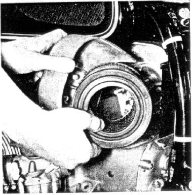

Remove air filter cartridge
every 3000 miles -- more often in dusty regions --
tap out dust carefully and blow out from inside with compressed air.
Replace filter cartridge every 6000 miles;
under extreme conditions replace more frequently.
A clogged air filter cartridge increases fuel consumption
and reduces power output.
To remove the air filter cartridge,
tie kick starter to foot rest, remove air intake tube,
unscrew allen head screw (wrench size 5).
Turn left half of the air filter housing to the side,
and pull out filter cartridge.
Figure 31
31
